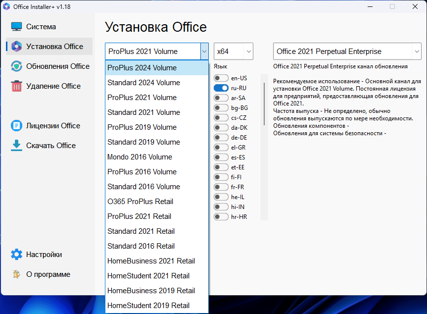

Office Installer+ 1.18

Office Installer - программа предназначена для online и offline установки Office 2016/2024 C2R.
Так же имеется возможность создать свой дистрибутив Office для последующей установки Office offline.
Описание: Работа с программой:
1. Удалите Office C2R с помощью кнопки "Удаление".
2. Удалите Office C2R с помощью "Force Remove Office" и перезагрузите компьютер.
3. Установите Office, нажав кнопку "Install". Как пользоваться вкладкой Скачать Office:
Данная вкладка служит для создания offline дистрибутива той или иной версии и редакции Microsoft Office, для последующей установки продукта без получения файлов из-вне. 1. Выберите необходимую версию офиса, разрядность и язык. Можно сделать полноценный х86-х64 дистрибутив. Для этого в закладке разрядности выбрать пункт All (самый нижний). Нажмите кнопку Download и выберите папку для файлов дистрибутива. Вы можете выбрать папку предыдущей сессии работы программы, чтобы продолжить создание дистрибутива, иначе будет начата новая сессия. 2. Если Вы желаете дополнить скачанный дистрибутив, нажмите кнопку Download и укажите ту же самую папку для загрузки. 3. После окончания загрузки всех необходимых разрядностей и языков можно создать ISO-образ офисного пакета. Для этого нажмите кнопку Create ISO. 4. В итоге в выбранной папке Вы увидите готовый к применению offline установщик Microsoft Office выбранной Вами редакции. Дополнительные параметры запуска программы (ключи):
/install - Запустить программу в скрытом режиме и выполнить установку Office с ранее настроенными параметрами. Рядом с программой должен находиться файлик Office Installer.ini с настроенными параметрами. Установка может выполняться как в online режиме, так и в режиме offline (рядом с программой должна лежать папка Office с ранее скачанным дистрибутивом) Дополнительные вопросы: Чем отличается Office Installer от Office Installer+? В Office Installer+ есть возможность активации офиса.
После удаления офиса штатными средствами в системе остаются его лицензии и ключи. Если у вас ранее был установлен, например, Office 2016, вы его удалили и установили Office 2024 - может так получиться, что в свойствах офисного приложения вы увидите не Office 2024, а Office 2016. Чтобы такого не произошло, желательно после удаления старого офиса в разделе программы "Лицензии Office" посмотреть оставшиеся в системе лицензии и удалить ненужные. Если удалять лицензии с включенным переключателем "Удалить ключи" - из системы удалятся ключи, с которыми был установлен старый офис. Активация офиса в версии Office Installer+: Активация офиса:
На вкладке Система расположены кнопка "Активировать Office" и combobox для выбора on-line KMS-Service. В программу можно добавить свои сервера, для этого их нужно вписать в Office Installer+.ini в параметр KMS, через запятую. Пример: "KMS = xxxxx.xxx:4533,yyyyyy.yyy". Если порт не указан, будет использован стандартный порт 1688.

{kind=link}
{kind=link}
{kind=link}